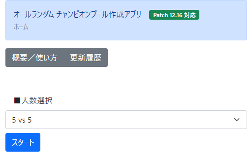

オールランダム チャンピオンプール作成アプリ
ホーム > 概要／使い方
- アプリ概要
- 対戦人数 + 2 体分のチャンピオンをランダムで表示するアプリです。
- 使い方
- ① 対戦人数を選択し、スタートボタンを押します。

- ② リロールボタンを押すたびにランダムでチャンピオンのアイコンが表示されます。
- ③ チャンピオンのアイコンをクリックするとグレースケールします。 また、もう一度押すと元に戻ります。
- 使用例
- ① カスタムゲームを以下設定で作成する。
・ハウリングアビス
・ドラフトピック
- ② 画面共有で当アプリを映しながらドラフトピックを進める。